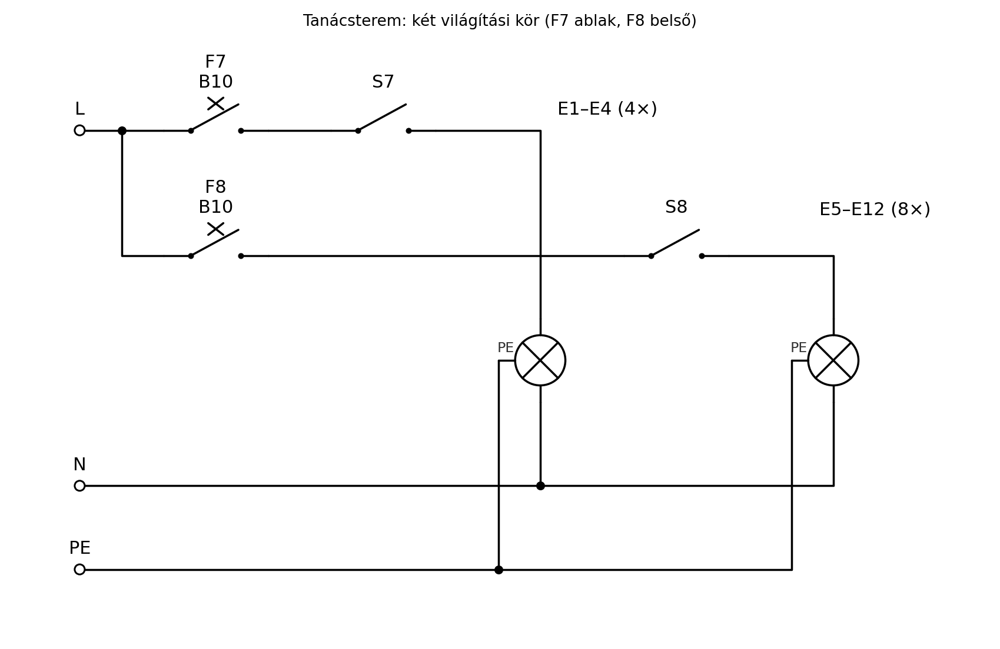
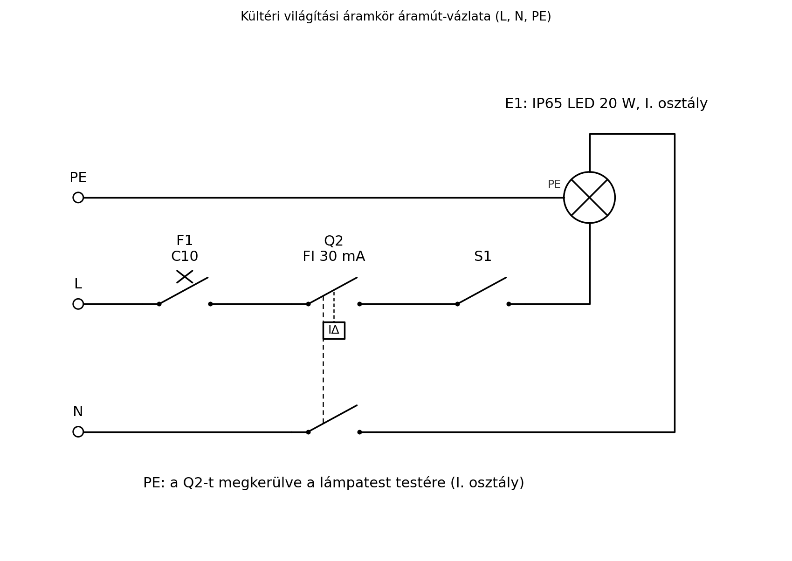

A kapcsolódó elmélet: tankönyv, 19.2 alfejezet.
Egy 5 m × 6 m = 30 m²-es irodába az előírás szerint 500 lx átlagos megvilágítás szükséges a munkasíkon. A kiválasztott LED-panel fényárama . A gyártó adatlapja alapján a hasznosítási tényező , a karbantartási tényezőt értékre vesszük fel. Hány lámpatest szükséges?
Számítás.
Adott: ; ; ; ; .
Keresett: .
Képlet: .
Behelyettesítés:
Eredmény: felfelé kerekítve 9 lámpatest szükséges.
Ellenőrzés: ha 9 lámpatestet szerelünk be, a tényleges átlagos megvilágítás:
ami kissé meghaladja az előírt 500 lx-t, tehát megfelelő. A 8 lámpatest csak 490 lx-t adna, ami már nem éri el az előírást.
A bevezető tanácsterem (48 m²) hat 4000 lm-es panellel, és mellett csak -t kapna; az 500 lx-hez , vagyis 12 panel kell.
Egy 12 m × 20 m = 240 m²-es raktárba 150 lx szükséges. Nagy fényáramú (csarnok-) LED-lámpatestek fényárama egyenként 12 000 lm, UF = 0,45, MF = 0,7 (poros környezet). Hány lámpatest kell?
Számítás.
Adott: ; ; ; ; .
Keresett: .
Képlet: .
Behelyettesítés:
Eredmény: felfelé kerekítve 10 lámpatest szükséges.
Ellenőrzés: a tényleges megvilágítás 10 lámpatesttel:
ami megfelel.
Ugyanaz az irodai példa, de a szerelő úgy gondolja, hogy „most még úgyis minden tiszta”, és értékkel számol. Képletében:
A 7 lámpatest újonnan, tiszta állapotban körülbelül 504 lx-t ad, ami éppen eléri az előírást. A szennyeződés miatt a fényáram azonban csökken: mellett az átlagos megvilágítás csak lx, vagyis 500 lx alatt van. Hiba: az MF elhanyagolása alulméretezéshez vezet. A helyes számítás az 1. példában látható.
Figyelem. A hasznosítási tényező módszer átlagos megvilágítást ad; az egyenletességhez a lámpatestek elrendezését is meg kell tervezni (a lámpatávolság kb. 1–1,5-szerese a lámpatestek munkasík feletti magasságának, faltól fél osztás; ellenőrizendő: gyártói ajánlás). A módszer nem alkalmas pontszerű megvilágítás (pl. munkahelyi lámpa) tervezésére.
A bevezető 6 m × 8 m-es, 2,8 m belmagasságú tanácstermét most a követelménytől az átadásig megtervezzük. A katalógus- és kapcsolókészülék-adatok példaadatok; valós munkában a gyártói adatlap számít.
1. Követelmény. , UGR ≤ 19, , (ellenőrizendő: MSZ EN 12464-1); a fogalmakat és az értékeket a következő szakasz táblázata foglalja össze. A munkasík 0,75 m magas, a LED-panelek a mennyezetre kerülnek, így .
2. Helyiségindex. .
3. Hasznosítási tényező. A választott opál panel kitalált gyártói táblája (reflexió: mennyezet/fal/padló 0,7/0,5/0,2; ez más lámpatest, mint a lenti gyakorló generátoré): → UF = 0,62; → UF = 0,68. A a két oszlop közé esik, ezért lineárisan interpolálunk: a kisebb UF-hez hozzáadjuk a különbségnek azt a hányadát, ahol a a két táblázati érték között áll:
4. Lámpaszám. Panel: 4000 lm, 32 W; MF = 0,85.
(a tört 11,03, ezért felfelé kerekítve 12).
5. Raszter. 3 × 4 = 12 panel: a 6 m-es irányban 3 sor, 2 m osztással, a faltól 1 m; a 8 m-es irányban 4 sor, 2 m osztással, a faltól 1 m. Az osztás 2 m ≤ (ellenőrizendő: gyártói ajánlás). A tényleges karbantartott átlag:
6. Pontellenőrzés. A pont-módszerrel (Lambert-panel, , ) mind a 12 panel közvetlen hozzájárulását összeadjuk, karbantartási tényező nélkül (táblázatkezelőben vagy programmal):
| Pont (a faltól mérve: 6 m-es × 8 m-es irányban) | E közvetlen (lx) |
|---|---|
| terem közepe (3 m; 4 m) | ≈ 782 |
| egy panel alatt (3 m; 3 m) | ≈ 796 |
| fal közepe (0,5 m; 4 m) | ≈ 555 |
| sarok (0,5 m; 0,5 m) | ≈ 392 |
Tanulság: a sarok a leggyengébb pont. A falakról visszavert (szórt) összetevő ezt javítja; a pontos egyenletességet tervezőprogram adja. (A 0,5 m-es hálón számolt közvetlen , a követelmény közelében van, ezért a falmenti munkahelyeket átadáskor mérni kell.)
7. Teljesítménysűrűség. , azaz ; 544 lx-re vetítve kb. 100 lx-enként (a megkövetelt 500 lx-re vetítve 1,6).
8. Kapcsolási csoportok és védelem. Az ablak menti sor (E1–E4) és a belső 8 panel (E5–E12) külön kapcsolható, így a nappali fény kihasználható. Két áramkör, mindkettő B10, NYM-J 3×1,5 mm². Üzemi áram (teljesítménytényező 0,95):
Az üzemi áram tehát kicsi; a kismegszakítót a meghajtók bekapcsolási lökése korlátozza. A példa darabszám-táblája szerint B10 mögé legfeljebb 8 meghajtó kerülhet (példaadat; a választott meghajtó adatlapja mérvadó): 8 ≤ 8, megfelel, de tartalék nélkül. Bővítéshez B16 (a vezeték és a hurokimpedancia újraellenőrzésével) vagy késleltetett kapcsolás kell, lásd Kismegszakítók és kioldási jelleggörbék (B, C, D) (tankönyv, 18.2). Kapcsolás: két egypólusú kapcsoló (S7, S8) az ajtónál, vagy jelenlét-érzékelő, lásd Érzékelők: fény, mozgás, jelenlét, hőmérséklet (tankönyv, 20.1). Az áramkörök az elosztó 30 mA-es FI-védelme mögött vannak (ellenőrizendő: MSZ HD 60364-4-41).
9. Kapcsolási rajz. Egy lámpajel csoportonként a párhuzamosan kötött paneleket jelöli.

10. Anyaglista (tervezési példa).
| Tétel | Mennyiség |
|---|---|
| LED-panel 4000 lm, 32 W, UGR-adattal, | 12 db |
| B10 kismegszakító (F7, F8) | 2 db |
| NYM-J 3×1,5 mm² | kb. 45 m |
| csatlakozás (rugós vagy sorkapocs) a paneleknél | 12 hely |
| egypólusú kapcsoló szerelvénydobozzal (S7, S8) | 2 db |
| rögzítőelemek a panelekhez | 12 készlet |
Munkaidő-becslés (tanulási érték, ellenőrizendő a helyszíni körülmények szerint): panelenként 0,5 óra, kábelezéssel, kapcsolókkal és ellenőrzéssel együtt kb. 8 óra két fővel.
11. Átadás. A szerelői ellenőrzések (folytonosság, szigetelési ellenállás, lekapcsolási feltétel, funkció) után a megvilágítást a munkasíkon, kb. 1 m × 1 m-es hálóban mérjük (ellenőrizendő: MSZ EN 12464-1 mérőháló), rögzítjük -t és -t, és kiszámítjuk az értéket. Új, tiszta lámpáknál a mért átlag a karbantartott 544 lx-nél nagyobb lesz (elvileg kb. lx). Az eljárást és a jegyzőkönyvet a „Gyakorlati útmutató: megvilágítás mérése átadáskor” szakasz írja le.
A mérés nem bontja a hálózatot. Biztonsági korlát: a lámpatestekhez nem nyúlunk; ha mégis kell (csere, beállítás), az öt biztonsági szabály szerint feszültségmentesítünk (leválasztás, visszakapcsolás elleni biztosítás, a feszültségmentesség ellenőrzése, földelés és rövidre zárás az előírás szerint, a szomszédos feszültség alatti részek elkerítése). Magasban csak megfelelő állványról dolgozunk.
1. Eszköz és előkészítés.
2. Mérőháló. A mérést a munkasík magasságában (irodában 0,75 m, közlekedőn padlószinten) végezzük, a falak mellett kb. 0,5 m sávot kihagyva, kb. 1 m × 1 m-es rácsban (nagy térben ritkább, kis munkaterületen sűrűbb) (ellenőrizendő: MSZ EN 12464-1 mérőháló-szabálya). A mérőfej vízszintes, a mérést végző személy nem árnyékolja; a rácspontokat az alaprajzon számozzuk.
3. Kiértékelés. mérési pontból
Megfelel, ha és eléri a követelményt (az új berendezésen mért átlagnak az MF miatt tartalékkal kell a karbantartott érték felett lennie). Ha kevés a fény, sorban ellenőrizzük: a beépített lámpatest típusa és darabszáma, szennyeződés vagy védőfólia, a programozható meghajtón beállított fényáram, a szabályozás beállítása, végül a terv adatai (reflexió, belmagasság).
4. Jegyzőkönyv-sablon.
| Rovat | Bejegyzés |
|---|---|
| helyiség, dátum, mérést végző | |
| műszer, gyári szám, kalibrálás érvényessége | |
| mérési magasság, rácsméret, falmenti sáv | |
| körülmények (nappali fény, bemelegedés, fényerő) | |
| mért értékek mátrixa az alaprajz szerint (pl. 5 × 7 pont) | |
| / / (lx, lx, –) | |
| követelmény (, ) és forrása | |
| értékelés: megfelel / nem felel meg, teendő, aláírás |
Kitöltős feladat (C). Egy iroda 24 rácspontjában mért megvilágítás (lx):
| 1. oszlop | 2. oszlop | 3. oszlop | 4. oszlop |
|---|---|---|---|
| 520 | 560 | 540 | 480 |
| 590 | 640 | 630 | 560 |
| 600 | 650 | 640 | 570 |
| 590 | 640 | 620 | 560 |
| 560 | 600 | 590 | 530 |
| 470 | 510 | 500 | 440 |
Számítsd ki -t, -t és -t, és döntsd el, teljesül-e az , követelmény!
Megoldás: az összeg 13 590 lx, ; ; . Mindkét feltétel teljesül, a terem megfelel (az egyes pontok 500 lx alatti értéke önmagában nem hiba, mert átlagra vonatkozik).
1. kérdés (igaz/hamis). A hasznosítási tényező (UF) a lámpatest hatásfoka (a lámpatestből kilépő és a fényforrás fényáramának hányadosa).
2. kérdés (gyors számolás). Egy 20 m²-es helyiségbe 300 lx szükséges. A lámpatest fényárama 2500 lm, UF = 0,5, MF = 0,8. Hány lámpatest szükséges?
3. kérdés (gyakorlati). Milyen IP védettséget választanál egy kültéri, közvetlen esőnek kitett fali lámpához? Indokold!
4. kérdés (rajzolvasás). Az egyvonalas rajzon egy kapcsoló előtt van a FI-relé és a kismegszakító. Melyik készüléknek mi a szerepe, és mi a helyes sorrend?
5. kérdés (számítási hiba keresése). Egy szerelő egy 100 m²-es műhelyt 500 lx-re tervez, lámpatest 8000 lm, UF = 0,4, MF = 0,7. Képlete: n = (500·100) / (8000·0,4) = 15,6 → 16 db. Mi a hiba?
6. kérdés (rövid indoklás). Miért kell kültéri áramkörbe 30 mA-es FI-relét szerelni?
1. feladat (A). Egy öltöző 4 m × 5 m, az előírt átlagos megvilágítás 100 lx. A lámpatest fényárama 2400 lm, UF = 0,45, MF = 0,8. Hány lámpatest kell?
2. feladat (A). Sorold fel az IP-kód első és második számjegyének jelentését, és adj példát IP44, IP65, IP67 védettségű lámpatestek használati helyére!
3. feladat (B). Egy tárgyaló 8 m × 10 m, 500 lx szükséges (MSZ EN 12464-1, tárgyaló: írás, olvasás; ellenőrizendő a hatályos kiadás táblázata). Két jelölt lámpatest van: A típus: 4200 lm, UF = 0,55; B típus: 6000 lm, UF = 0,48. Mindkettőhöz MF = 0,85. Melyik típusból hány darab kell, és melyik a gazdaságosabb, ha az A ára 12 000 Ft/db, a B ára 18 000 Ft/db?
4. feladat (B). Egy kültéri parkolóvilágításhoz 10 db 30 W-os LED-lámpatestet szerelnek, IP65-ös kivitelben. A lámpatestek egy egyfázisú 230 V-os áramkörre kerülnek, a kismegszakító C10 A-es. Az áramkör hossza a legtávolabbi lámpáig 80 m, réz vezeték, keresztmetszet 2,5 mm². Ellenőrizd, hogy a feszültségesés a megengedett 3%-on belül van-e! (Réz fajlagos ellenállása ; a feszültségesés képlete egyfázisú körben: , itt .)
5. feladat (C). Egy 200 m²-es üzemcsarnokba 500 lx szükséges. A rendelkezésre álló lámpatestek: 12 000 lm, UF = 0,4, MF = 0,7. A lámpatestek ára 25 000 Ft/db, a szerelési költség 5 000 Ft/db. Az energiaár 50 Ft/kWh. A lámpatestek teljesítménye 100 W/db. Hány lámpatest kell, és mennyi lesz az éves energiafogyasztása, ha napi 10 órában, évi 250 munkanapon üzemel?
6. feladat (D). Egy kültéri lépcsővilágítást építesz: 5 db 12 V-os, 5 W-os LED-lámpatestet szeretnél, az MSZ HD 60364 szerint törpefeszültségű (SELV) táplálással. A lámpatestek IP67 védettségűek, III. érintésvédelmi osztályúak (SELV-ről működnek), és műanyag házasak. Rajzold fel az áramkör blokkvázlatát, és válaszd ki a szükséges tápegységet (AC/DC LED-tápegység, állandó feszültségű, 12 V, legalább 30 W). Ismertesd, miért nem kell FI-relé a törpefeszültségű oldalon, és miért kell a hálózati oldalon FI-relé és kismegszakító!
7. feladat (B). Egy kültéri falilámpa a bejárat fölött, a talaj felett magasan van; fényerőssége a tartományban állandónak vehető: . Mekkora a vízszintes talaj megvilágítása a fal tövétől 3 m-re? (Pont-módszer, csak a közvetlen fénnyel.)
8. feladat (B). Az előző feladat lámpájával mekkora a megvilágítás közvetlenül a fal tövében, a lámpa alatt? Hányszorosa ez a 3 m-re lévő pont megvilágításának, és mit jelent ez az egyenletességre?
Önellenőrzés – válaszok
1. Hamis. A hasznosítási tényező a munkasíkra jutó és a lámpatestből kilépő fényáram hányadosa (). A lámpatest hatásfoka (LOR) a lámpatestből kilépő és a fényforrás fényáramának hányadosa; a fényáram és a villamos teljesítmény hányadosa pedig a fényhasznosítás (lm/W). Egyik sem azonos az UF-fel.
2. n = (300·20) / (2500·0,5·0,8) = 6000 / 1000 = 6. Tehát 6 db lámpatest.
3. Esőnek kitett falikarhoz legalább a gyártó által kültérre minősített, IPX4 (fröccsenő víz ellen védett) kivitel kell; ha vízsugár, lemosás vagy hó is érheti, IP65 (a második számjegy 5-ös értéke vízsugár elleni védelmet, az első 6-os a por elleni teljes védelmet jelent) (ellenőrizendő: MSZ HD 60364-7-714).
4. A kismegszakító a túláram (zárlat, túlterhelés) ellen véd, a FI-relé a hibaáram ellen. A lakáselosztóban jellemzően a FI egy csoport elején áll, mögötte a csoport kismegszakítói (Lakás- és épületelosztó felépítése (tankönyv, 17.2)); egy önálló kültéri körnél kombinált FI/kismegszakító (MSZ EN 61009-1) is alkalmazható. Mindkét esetben a FI-t a gyártó által megadott túláramvédelem védi zárlat ellen (ellenőrizendő: gyártói koordinációs adat). Nincs egyetlen „helyes” sorrend: az alfejezet kültéri áramkörének rajzán az F1 kismegszakító a Q2 FI előtt áll, és ez is szabályos, ha a kismegszakító a FI-t a gyártói koordináció szerint védi zárlat és túlterhelés ellen; a lakáselosztóban a FI csoportonként elöl áll. A lényeg: a kapcsoló a védelmek után van, és a FI-t túláramvédelem védi.
5. A karbantartási tényezőt (MF = 0,7) elfelejtette a nevezőbe írni. A helyes n = (500·100)/(8000·0,4·0,7) = 50000/2240 ≈ 22,3 → 23 db.
6. Kültéren nagyobb az érintésveszély (nedvesség, csupasz talaj, fémház). A 30 mA-es FI-relé olyan hibaáramnál lekapcsol, amely már veszélyes lehet az emberre, így megelőzi az áramütést.
Feladatok – megoldások
1. feladat (A). Adott: A = 20 m², E = 100 lx, Φ = 2400 lm, UF = 0,45, MF = 0,8. Képlet: n = (E·A)/(Φ·UF·MF). n = (100·20)/(2400·0,45·0,8) = 2000/864 ≈ 2,31 → felfelé kerekítve 3 db lámpatest. Ellenőrzés: 3 db-bal E = (3·2400·0,45·0,8)/20 = 2592/20 = 129,6 lx, ami meghaladja a 100 lx-t.
2. feladat (A). IP-kód: első számjegy: 0–6 szilárd testek elleni védelem (pl. 6 = porálló); második: 0–8 víz elleni védelem (pl. 4 = fröccsenő víz, 5 = vízsugár, 7 = időszakos vízbe merítés). Példák: IP44 – fedett terasz, eresz alatti vagy esőnek kitett falikar (kültérre minősített kivitel); IP65 – lemosásnak, vízsugárnak, hónak kitett lámpatest (pl. homlokzat alsó része, parkoló); IP67 – talajba süllyesztett, vizes környezet.
3. feladat (B). A típus: n_A = (500·80)/(4200·0,55·0,85) = 40000/1963,5 ≈ 20,4 → 21 db. B típus: n_B = (500·80)/(6000·0,48·0,85) = 40000/2448 ≈ 16,3 → 17 db. Költség A: 21·12000 = 252 000 Ft; B: 17·18000 = 306 000 Ft. Az A típus olcsóbb, bár több darab kell belőle.
4. feladat (B). A teljesítmény: P = 10·30 W = 300 W. Áram: I = P/U = 300/230 ≈ 1,30 A. Vezeték hossza a legtávolabbi lámpáig: l = 80 m (oda-vissza: 2·l = 160 m). Ellenállás: R = ρ·(2l)/A = 0,0178·160/2,5 = 0,0178·64 = 1,139 Ω. Feszültségesés: ΔU = I·R = 1,30·1,139 ≈ 1,48 V. Százalékban: 1,48/230·100 ≈ 0,64 %, ami jóval a 3 % alatt van. (Megjegyzés: a képlet egyszerűsítve, a cosφ=1 miatt pontos.)
5. feladat (C). Lámpaszám: n = (500·200)/(12000·0,4·0,7) = 100000/3360 ≈ 29,76 → 30 db. Összes bekerülési költség: 30·(25000+5000) = 900 000 Ft. Éves energiafogyasztás: P_össz = 30·100 W = 3 kW. Napi 10 h, évi 250 nap → t = 2500 h. Energia: W = 3 kW·2500 h = 7500 kWh. Költség: 7500·50 = 375 000 Ft/év. (Az energiaár csak példa, a valós érték változhat.)
6. feladat (D). Blokkvázlat: hálózati betáplálás → kismegszakító (C6 A) → FI-relé (30 mA) → LED-tápegység (AC/DC, 230 V/12 V, 30 W vagy nagyobb) → törpefeszültségű kábel (keresztmetszet a hosszból és a 12 V-on megengedett feszültségesésből számolandó, az áram ) → 5 db párhuzamosan kapcsolt 12 V/5 W LED (összesen 25 W). A lámpatestek III. osztályúak, a SELV-kör nem földelhető, ezért nincs védővezető a kimeneti oldalon. A törpefeszültségű oldalon 12 V alacsony, érintése biztonságos (SELV áramkör), ezért ott nincs szükség FI-relére; a védelem a tápegységben biztosított (a hálózat és a kimenet galvanikus elválasztása). A hálózati oldalon viszont kötelező a kismegszakító (túláram) és a FI-relé (hibaáram), mert a tápegység csatlakozó oldala 230 V-os, és a törpefeszültségű oldal biztonsága a tápegység épségétől függ. Ha a tápegység meghibásodik, a hálózati oldal FI-reléje véd. A biztonsági korlát itt is érvényes: hálózati feszültségű munkát csak jogosult végezhet, feszültségmentesítés után.
7. feladat (B). A pont a fal tövétől 3 m-re, a lámpa 3 m magasan: , , . .
8. feladat (B). A lámpa alatt , : . Ez kb. 2,8-szerese a 3 m-re lévő pont 11,8 lx-ének: a fény erősen a fal tövére koncentrálódik, a bejárat előtti terület egyenletessége gyenge. Egyenletesebb lesz a megvilágítás magasabbra szerelt, szélesebb eloszlású lámpával vagy több lámpával.
Kidolgozott példa. Két 4000 lm-es opál panel 2 m-re van egymástól, . A tengelyirányú fényerősség .
A számok mutatják, hogy a szomszédos lámpák összegzése miatt a felezőpont világosabb lehet, mint egyetlen lámpa alatt (303 lx); ha mindkét lámpát figyelembe vesszük, a lámpa alatt kb. 383 lx, a felezőpontban 395 lx adódik. A számítás csak a közvetlen összetevőt adja: a falakról, mennyezetről visszavert fényt és a karbantartási tényezőt (MF) nem tartalmazza, ezért belső térben a valóságos érték nagyobb, az idővel csökkenő fényáram miatt pedig MF-fel csökkentendő.
Gyakorló generátor. A kalkulátor kész eredményt ad; a tervezést viszont lépésenként kell begyakorolni: → helyiségindex → UF a táblából (interpolálással) → lámpaszám → raszter → tényleges átlagos megvilágítás. A HTML-kiadás generátora véletlen helyiségekkel (öltöző, raktár, közlekedő, műhely, iroda, rajzterem) három szinten kérdez: A – , és UF; B – ehhez a szükséges lámpaszám törtként; C – a teljes terv: raszter (hány lámpa kerül a hossz és a szélesség mentén, az osztás legfeljebb , faltól fél osztás) és a tényleges megvilágítás; a lap a raszterből kis alaprajzot rajzol. Az UF-tábla tanulási tábla egy opál panelre (a valódit a gyártó adja); a lap kiírja a táblát. Felismeri a tipikus hibákat: belmagasság helyett, kimaradt MF (a 3. példa hibája), lefelé kerekített lámpaszám. A nyomtatott kiadásban az alábbi nyolc feladat és megoldókulcsa szerepel (a raszter „hossz mentén × szélesség mentén” darabszám).
| 0,6 | 0,8 | 1,0 | 1,25 | 1,5 | 2,0 | 2,5 | 3,0 | 4,0 | 5,0 | |
|---|---|---|---|---|---|---|---|---|---|---|
| UF | 0,40 | 0,46 | 0,51 | 0,56 | 0,60 | 0,66 | 0,70 | 0,73 | 0,76 | 0,78 |
Rögzített feladatsor. A HTML-kiadás gyakorlója végtelen sok hasonló feladatot ad; az alábbi nyolc feladat rögzített (munkasík 0,75 m, a táblázat UF-táblájával), a megoldókulcs a végén található.
Megoldókulcs.
| Feladat | Szint | hm | k | UF | n (tört) | lámpa a hossz (L) mentén | lámpa a szélesség (B) mentén | Etény |
|---|---|---|---|---|---|---|---|---|
| 1. | C | 1,85 m | 0,927 | 0,492 | 3,59 db | 2 db | 2 db | 334 lx |
| 2. | C | 1,95 m | 1,14 | 0,538 | 6,08 db | 4 db | 2 db | 658 lx |
| 3. | C | 2,05 m | 1,33 | 0,573 | 7,7 db | 4 db | 2 db | 519 lx |
| 4. | C | 2,25 m | 1,52 | 0,603 | 7,46 db | 4 db | 2 db | 322 lx |
| 5. | C | 2,45 m | 1,96 | 0,655 | 14,4 db | 5 db | 3 db | 522 lx |
| 6. | C | 2,05 m | 1,83 | 0,64 | 7,82 db | 4 db | 2 db | 205 lx |
| 7. | C | 5,25 m | 1,43 | 0,589 | 14,6 db | 5 db | 3 db | 309 lx |
| 8. | C | 1,95 m | 1,2 | 0,549 | 2,62 db | 3 db | 1 db | 114 lx |
Kidolgozott megoldások.
Gyakorlati példa (rajzban). Az alábbi egy egyszerű kültéri világítási áramkör áramút-vázlata (a kapcsolási rajzot a Világítási áramkörök: egypólusú, soros, váltó és kereszt (tankönyv, 16.2) alfejezetben ismertettük):

A rajz azt szemlélteti, hogy a fázis (L) sorban az F1 kismegszakítón, a Q2 FI-relén és az S1 kapcsolón át jut a lámpatestre. A nulla (N) is átmegy a kétpólusú FI-relén (különben a FI nem a teljes áramot mérné), a kapcsoló viszont csak a fázist szakítja meg. A védővezető (PE) a FI-t megkerülve, közvetlenül a lámpatest testéig megy; az I. osztályú lámpatest PE csatlakozóját kötelező bekötni.